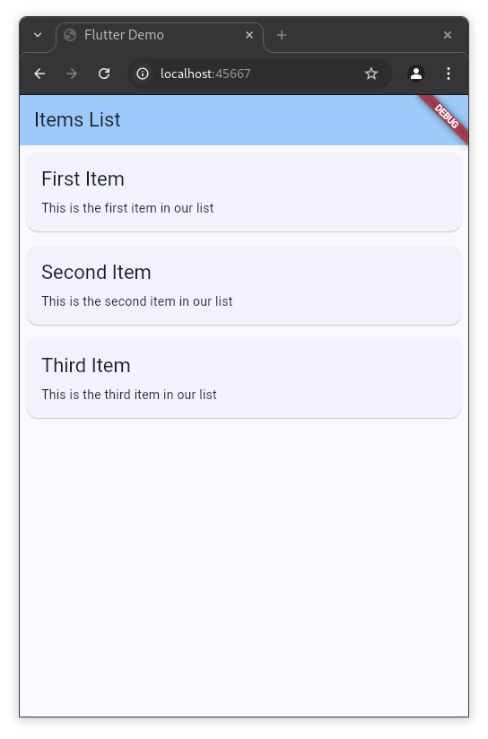
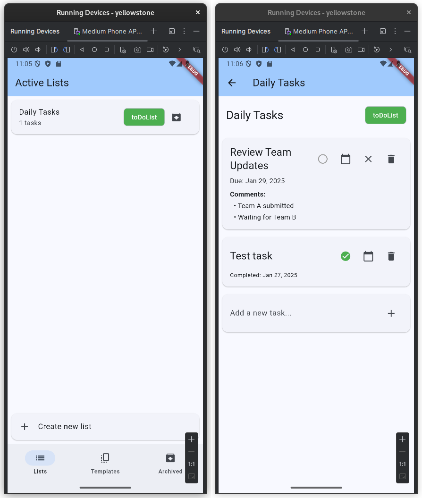
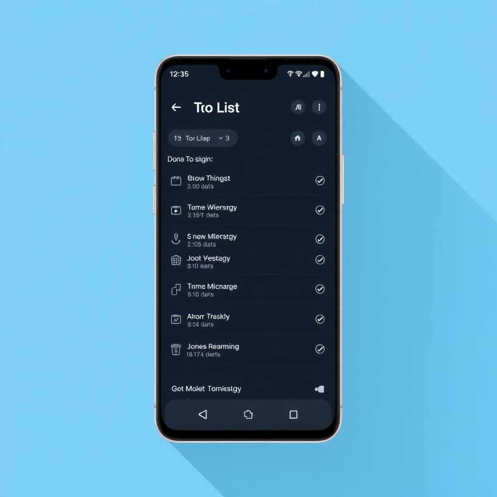
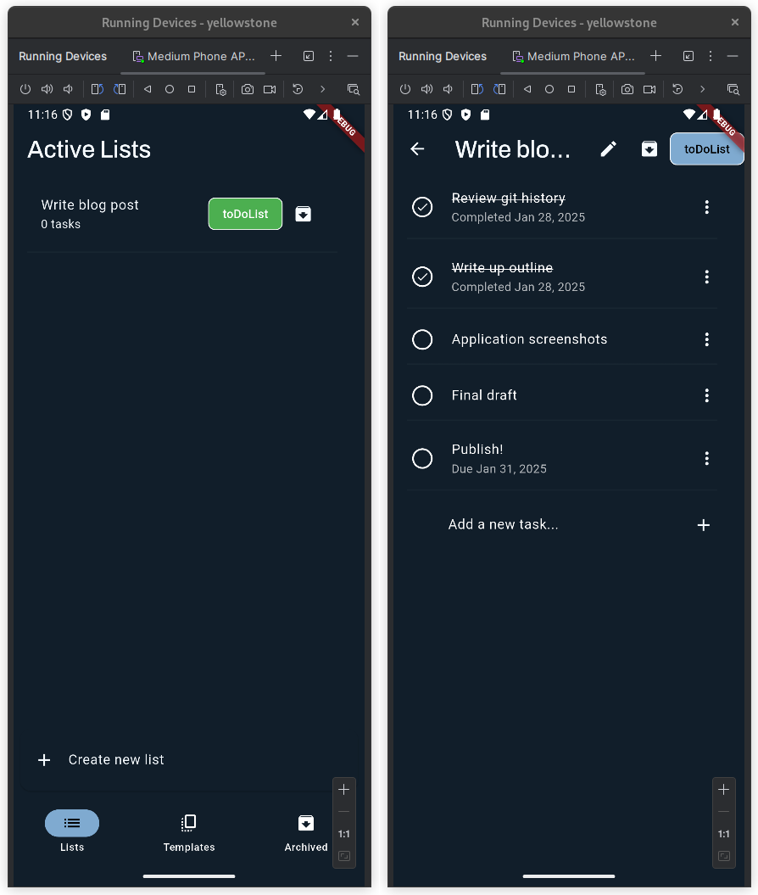
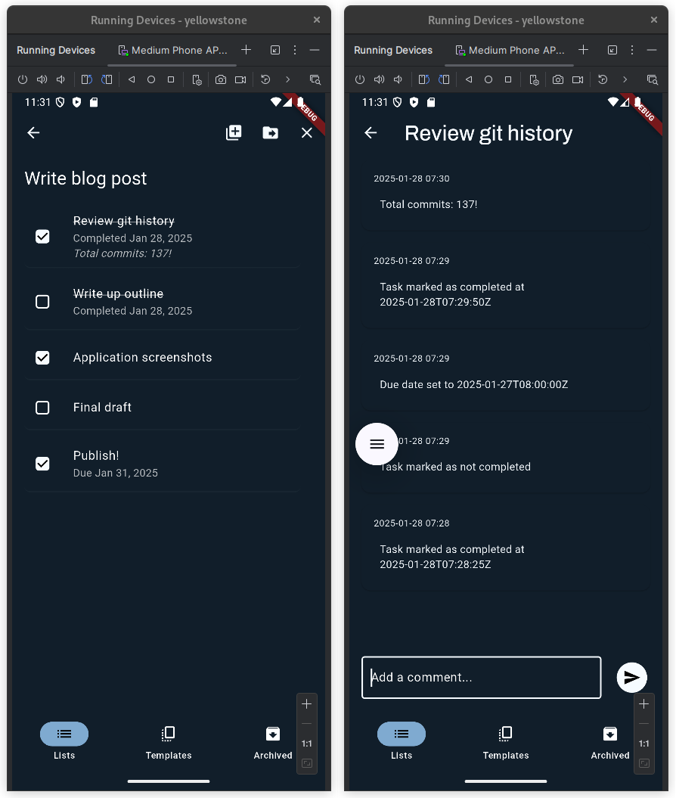
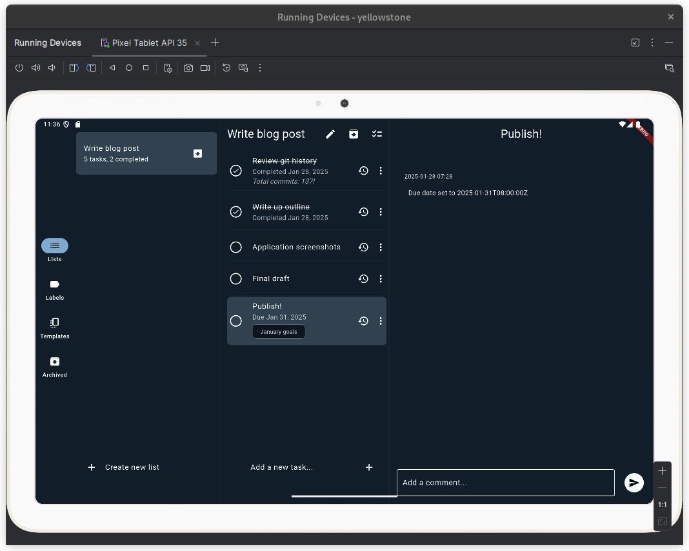

If you are reading this in February 2025, you are probably wrong about the impact AI coding tools (a.k.a. Large Language Models instructed to imitate software developers) will have on the art and business of writing software. I'm no one to judge: I am probably wrong myself as well. But I am betting that the impact will not be as simple as writing the same code but faster, with more tests or fewer bugs. While some experienced coders will look at these tools and say "So what?" or dismiss them as usurping the enjoyable parts of our work, I see opportunities to tackle projects in a whole new way, or tackle projects that otherwise wouldn't have happened at all. But strong claims require strong evidence, and I went looking for a project that I could take on that I wouldn't have considered before the advent of AI tools.
For this project I gave myself just one week and a small number of tools:
- Aider, a command-line tool that generates a whole commit for each prompt. I've found Aider to be very useful when starting a green-field project, as there aren't many files and technical details to get bogged down in. I think of this as the "rough carving" phase of creating a sculpture: the details aren't going to be correct, but I can make large changes, evaluate, and iterate.
- Cursor, a full-fledged IDE that supports multiple modalities from inline autocomplete-style suggestions to focused code edits to the new fully agentic Composer mode. This has become even more powerful than it was when I last wrote about it in October.
- ComfyUI using Flux Schnell, a diffusion-based image model that I can run locally to quickly generate UI mock-ups or icons.
So here is my project: I've wanted a custom To Do List application for my own exclusive use for a while. Alright, you can stop laughing now, I am aware that a million of these exist. I do have bespoke requirements, and as this thing is designed just for me, I figured if I could get a Minimum Viable Product done within one week it would be worth my while.
The most critical requirement for projects like this is getting something to a deployed state quickly. Why is this important? Because frankly, most nights I have an hour or two for side projects after the kids go to bed, and as the weeks drag on I easily lose track of my progress or get distracted. By contrast, once a project is deployed and I am actively using it, any bugs or missing features are a constant enticement to continue spending time improving it.
So for this MVP, my requirements are:
- Simple self-hosted server application using SQL storage
- Multi-platform: An Android client for use on the go, web client for more involved planning
- A single task can belong to multiple lists simultaneously; for example, weekly tasks that are also home improvement projects
- Templates can be used to quickly populate repeating tasks
- Tasks can be moved in bulk between lists
- Tasks can have a due date and a history of comments
I know this isn't a ground-breaking project on its own, however I did want to explore the advantages of Flutter SDK for multi-platform development and that has a learning curve. By contrast, I am very familiar with Go as a backend and I see no reason to innovate there. Still, implementing all these features on both frontend and backend would have taken way more than a week of work without the use of AI tools, and I very likely would have gotten bored of the project or more likely decided not to start it at all.
I'm including the breakdown of my progress below, but the tl;dr is that I
consider the project a huge success, with a grand total of fewer than 18 hours
spent between git init and production deployment. At the end I had a working
application on my own server with both fully functional web and Android clients,
which I could then embellish with new features over time.
So, what am I taking away from this experience?
1. The bar for starting a project is much lower than it was.
This is true not just for my personal projects, but I expect that to increasingly apply at work as well: What tools, features, and quality-of-life improvements are suddenly feasible that were previously infeasible? What technical debt can we now more easily pay down, which will speed up future development even more? My bet is that this re-investment is going to pay bigger productivity dividends than just adopting AI tools but continuing to work on the same projects.
2. There may not (yet) be one magic AI tool.
Even when they use the same foundational model - in this case, Claude Sonnet - different tools can be more or less effective at the same task. For at least the near future, I expect to invest both time and money in two or three different tools and switch between them depending on their capabilities and ergonomics. In this case that meant starting with Aider's workflow, and when it started to struggle with the size and complexity of the codebase, switch to Cursor's human-in-the-loop code generation.
3. Tasks that I would have avoided like the plague, I can now offload to AI.
One specific example is mocking data: I like to start building my UIs against a fully static mock API embedded in the client, so I can iterate on the API quickly before I start building the backend endpoints or persisting anything in a database. However, the burden of rewriting the mocks with every API change triggers my laziness reflex and I typically start building a backend early in the project. However, Aider was only too happy to build simple mocks and update them as I added features or refactored, and I ended up keeping them much further into the project, which made iterating on features very fast.
4. The project only slowed down when I had to learn something new.
The project did take a little longer than I had hoped, but most of that extra time was spent figuring out how to set up a AWS CloudFront distribution that serves static files from S3 and proxies API requests to my personal server. I had not used CloudFront before and while in hindsight I realize that I could have used the AI to generate a complete Terraform script, my decision to slow down and educate myself is justifiable in case I have to work with these services in the future. The next time I need to deploy something to CloudFront, I will be confident enough to let the AI generate the boilerplate, and I'll at least know enough to be able to review it.
5. Small, focused prompts tend to work better.
While the overall quality of the generated code was often good, the likelihood of completely catastrophic changesets seems to go up the more involved the requested change is. My prompting strategy tends towards breaking each feature down into UI changes, API changes, and backend model changes and writing separate prompts for each. This might require extra steps such as stubbing out a method in the frontend, building the UI for it, and then moving to the backend, but it makes each changeset easier for me to review and easier to roll back if the LLM goes completely off the rails.
6. The same tools may also help with documentation and maintainability.
I haven't stopped working on this project yet, but it's entirely possible that I will move onto other work and not come back to this project for months or years. That may pose a significant challenge for my memory of how this code works. Now might be the perfect time to get the LLM to generate some technical documentation or some unit or end-to-end tests that will help me dive back in easily to fix a bug or add a new feature.
So that's it. Honestly, I can't wait to find more projects to tackle with this new and incredibly powerful approach. If you haven't given some of these tools a try, I strongly recommend approaching them with a challenging goal and an open mind, recognizing that they might not be a good fit for the way you are accustomed to working. However, once you get a sense for their quirks, you might find you've gained a new superpower.
Project breakdown
Hour 0:
I spent the first hour installing Flutter SDK and Android SDK. I'm not counting this setup time as I hadn't created my project yet. I used Aider to create a shell Flutter project. Out of the box, it looks like this:

Hour 1:
Implemented nearly all of the MVP functionality on the client:
- Implement basic Task/TaskList domain model
- Mutable in-memory state in mock data service
- Navigation between task lists
- Task creation, completion & deletion
- Editing of task titles and due dates
- Reordering of tasks within a list
- Task list archiving
- Template task lists
- Editing of task list titles
- Reordering of task lists
Over half of the inital commits were from Aider, and most of the remaining commits were just small logic or syntax fixes cleaning up after Aider's mistakes. At this point much of the MVP functionality was working against locally mocked data:

Hours 2-4:
- Initialize Go server application
- Port backend framework package from another project
- Manually implement task list table schema / create / update as an example
- Replace mock data service with REST API service
- Refactor views to use async data fetching
- Implement additional backend endpoints
- Implement task table schema and associated endpoints
- Implement task-to-list relational table schema and associated endpoints
- Client support for publishing events to the server
The backend framework was pulled in as an application-agnostic package. I don't consider this to be "cheating" because I could have pulled in an existing library rather than my own, and it didn't implement any of the application's business logic. If anything, it is more impressive that Aider was able to build new data models using just my hand-written one as a prototype.
In this stretch about 2/3 of the commits were written by Aider, and at the end of 4 hours I had a fully working backend for all the MVP functionality.
Hours 5-9:
- Web application deployment to AWS S3
- Load balancer set up in CloudFront
- Auth0 authentication in load balancer
- Redirect to login page with webview on Android
This was the time-consuming part of the project, and a lot of it was done using "click-ops" (read: repeatedly bashing CloudFront, Route53, S3, Lambda, and IAM with a blunt instrument until it gave in and did what I wanted). There were a few commits during this period and about a third were created by Aider.
Hour 10:
- Backend Docker deployment
- Mock up themes using Flux Schnell & implement one
- Implement more backend endpoints
It was at this point in the project that Aider started to hallucinate badly, making changes to the Dart code that simply wouldn't compile, or breaking backend logic in the process of implementing new logic. All of the code changes from this point on where done in Cursor.
Looking through diffusion model-generated UI mock-ups is a bit like scrolling through Pinterest as seen through a broken kaleidoscope, but my favorite generation was this one:

I was able to match the general layout of the mock-up just by including the image in my prompt, but the LLM was unable to extract the colors or match the fonts so I did that manually. This is what the app looks like styled:

Hours 11-16:
- Polling for updates from the server
- Temporary local application of in-flight changes
- Track task change history and comments
- App icon generated by Flux Schnell
- Selection mode for bulk move/copy of tasks
- Initial pass at responsive view for wider screens
A lot of the functionality toward the end was actually "nice to haves" that weren't technically in the original requirements but collectively make the difference between an app that I might want to use occasionally and one that I'll want to use every day.

I've named the app Yellowstone, and I figured an icon of a bison would be appropriate. This was my favorite of the generated icon designs:
Hours 17-18:
- Clean up responsive UI
- Add task labels
- Release management
Were I an expert in Flutter, I definitely would not have allowed Claude to make so many attempts to get the scrolling behavior of my task list correct. It was able to get scroll-while-dragging to work, or it was able to keep the "New task" input attached to the bottom of the view, but never both. Eventually I asked deepseek-r1 to give it a try and after writing me a heart-wrenching novel of trust and betrayal, it did in fact deliver a working widget tree.
As far as the layout across platforms, Flutter does have the flexibility to make reasonably responsive UIs, but the cost is still a web layout that looks incongruously like an Android app on the desktop and will never really function like a webpage. For example, simple text selection doesn't work without additional plugins!
In the future, I might consider building the app in Flutter and then using Claude to rewrite it in Javascript for web; this is probably something it would be very adept at.
Here is the final layout, which IMO looks great on a tablet at least:

Total time: 17 hrs 23 min.
Commits: 137, 64 by Aider.
Cost: $6.82 in Anthropic API credits + $20 monthly Cursor Pro subscription.